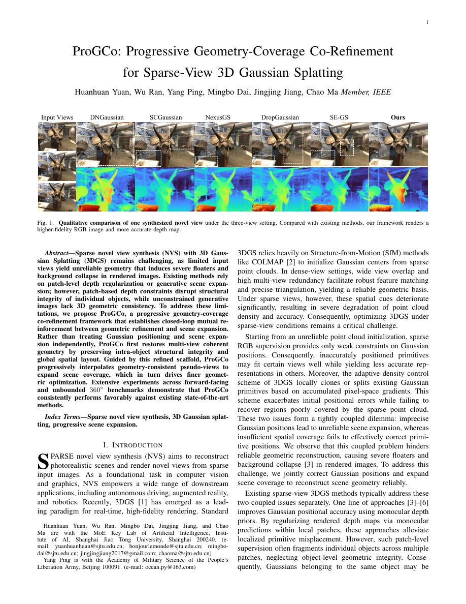

I am a Ph.D. candidate in Computer Science and Technology at Shanghai Jiao Tong University, working on Generative AI, video generation, diffusion models, multimodal learning, and 3D vision. My recent research focuses on multimodal understanding and post-training for multi-shot video generation, as well as sparse-view 3D reconstruction with generative priors. I am currently a research intern at Alibaba Taotian Group, where I work on multimodal reward modeling and preference optimization for video generation.
Before joining SJTU, I received my M.S. degree in Computer Science and Technology from Central China Normal University and my B.S. degree in Computer Science and Technology from Northwest A&F University.
Education
Shanghai Jiao Tong University Ph.D. in Computer Science and Technology
Sep. 2022 – Jun. 2027 (expected)
Central China Normal University M.S. in Computer Science and Technology
Sep. 2019 – Jun. 2022
Northwest A&F University B.S. in Computer Science and Technology
Sep. 2011 – Jun. 2015
News
2026 — One paper on efficient pixel-space diffusion for depth estimation is accepted by ECCV 2026.
2026 — Our work on generalized deepfake detection is accepted by IEEE Transactions on Multimedia.
2026 — Joined Alibaba Taotian Group as a research intern, working on multimodal understanding and video-generation post-training.
Selected Publications

ProGCo: Progressive Geometry-Coverage Co-Refinement for Sparse-View 3D Gaussian Splatting
Huanhuan Yuan, Wu Ran, Yang Ping, Mingbo Dai, Jingjing Jiang, Chao Ma
IEEE Transactions on Multimedia (under review / major revision)
Sparse-view 3D Gaussian Splatting suffers from unreliable geometry and insufficient scene coverage. We propose ProGCo, a progressive geometry-coverage co-refinement framework that first establishes a coherent geometric scaffold with instance-aware depth regularization and scene-level depth alignment, and then progressively expands scene coverage using geometry-grounded pseudo-views with diffusion-based artifact suppression and structural filtering. On LLFF with only three input views, ProGCo improves PSNR from 18.54 to 22.06 dB and reduces LPIPS from 0.272 to 0.177.
Patch-Discontinuity Mining for Generalized Deepfake Detection
Huanhuan Yuan, Yang Ping, Zhengqin Xu, Junyi Cao, Shuai Jia, Chao Ma
IEEE Transactions on Multimedia
We introduce GenDF, a simple and parameter-efficient framework that transfers a pretrained ViT to generalized deepfake detection. GenDF learns deepfake-specific patch relationships with LoRA-based low-dimensional adaptation, redistributes real/fake feature spaces for stronger discrimination, and applies trainable-parameter-free class-invariant feature augmentation to improve robustness to unseen forgery patterns. The method achieves state-of-the-art cross-domain and cross-manipulation generalization with only 0.28M trainable parameters.
ProGCo: Progressive Geometry-Coverage Co-Refinement for Sparse-View 3D Gaussian Splatting. Huanhuan Yuan et al. IEEE TMM, under review / major revision.
Efficient and High-Quality Depth Estimation via Pixel-Space Diffusion with Linear Attention. ECCV 2026. [paper]
Patch-Discontinuity Mining for Generalized Deepfake Detection. Huanhuan Yuan et al. IEEE TMM. [paper]
Efficient Driving Scene Reconstruction with Progressive Scene Extrapolation and Repairing. IEEE TVCG.
A Hierarchical Convolution Capsule Network for EEG-Based Student’s Higher Order Thinking Skills Detection. arXiv.
Knowledge map construction based on association rule mining extending with interaction frequencies and knowledge tracking for rules cleaning. Interactive Learning Environments, 2024.
Experience
Alibaba — Taotian Group Research Intern · Multimodal Understanding & Video Generation Post-training
May 2026 – Present
Built large-scale multimodal preference data (20K prompts / 44K text-video preference pairs), designed fine-grained evaluation criteria and LLM/VLM-assisted annotation, and studied VLM-based reward modeling and DPO for multi-shot video consistency.
Suzhou Institute of Nano-Tech and Nano-Bionics, CAS Project Member · Real-time Air-Ground Video Object Detection
Jul. 2024 – Nov. 2024
Academic Services
Reviewer for IEEE Transactions on Multimedia, CVPR, ECCV, and ACM Multimedia.